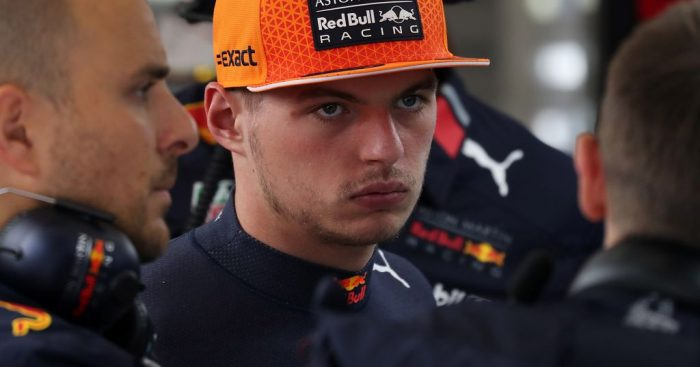
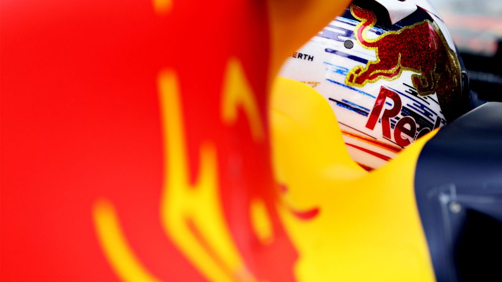
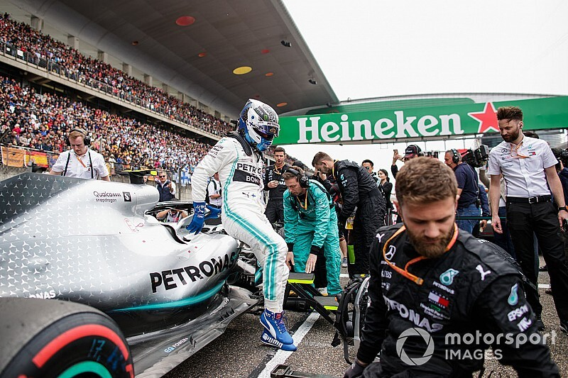
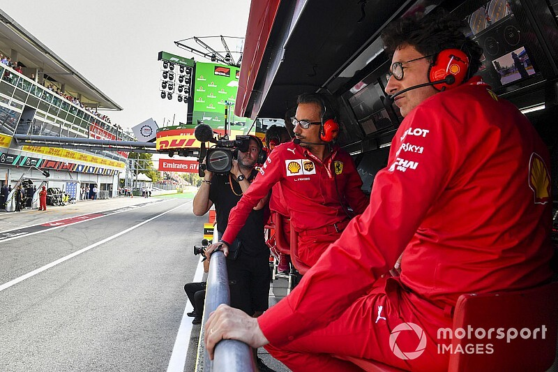
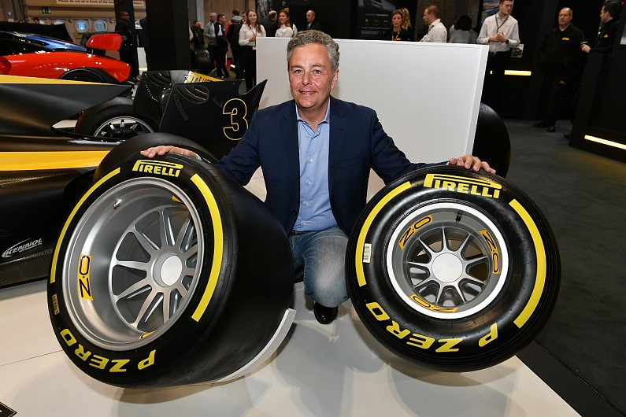
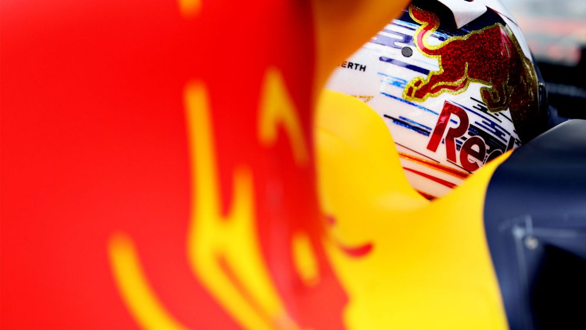
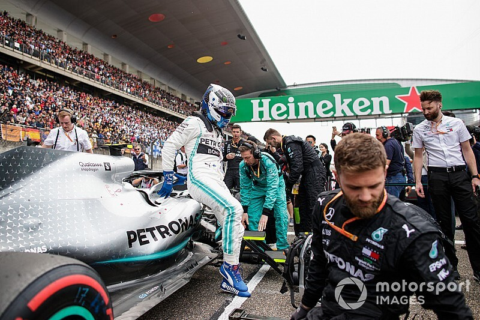
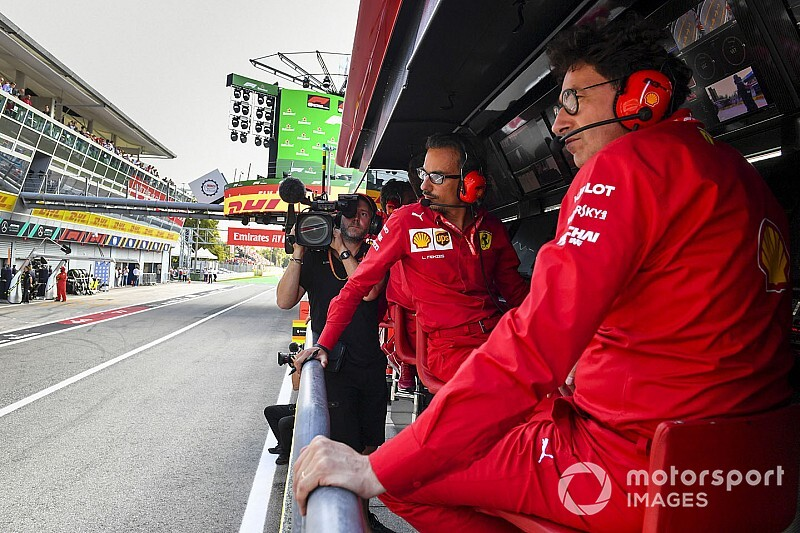
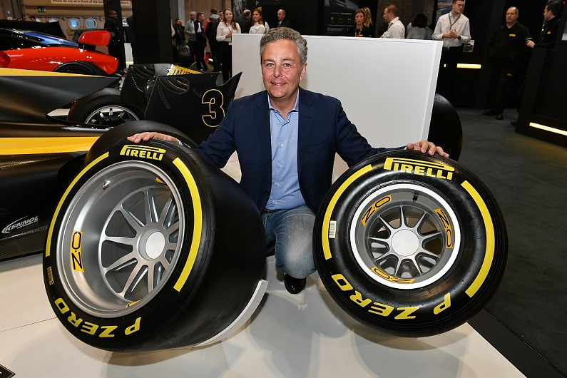

Vijesti iz svijeta Formule 1





Klauzula u slučaju Max Verstappen
Helmut Marko otkriva da postoji klauzula u slučaju Verstappena ako Honda napusti F1 Više ...

Red Bull odredio datum otkrivanja RB16 bolida
Red Bull otkriva novi bolid 12. Veljače. Više...

F1 rasprava o korona virusu u susret VN Kine
Timovi F1 su spremni raspravljati o nadolazećem susretu u Kini koji će biti odgođen ili otkazan Više ...

Ferrari: Naša politika je najveća slabost
Mattia Binnoto priznaje da moraju riješiti unutarnju politiku unutar Ferraria za njihov boljitak. Više ...

Pirelli: Nema povratka nakon promjene na 18 inčne kotače
Nema povratka na 13 inčne kotače nakon promjene, na veće 18 inčne, iako bi timovi bili nezadavoljni Više ...